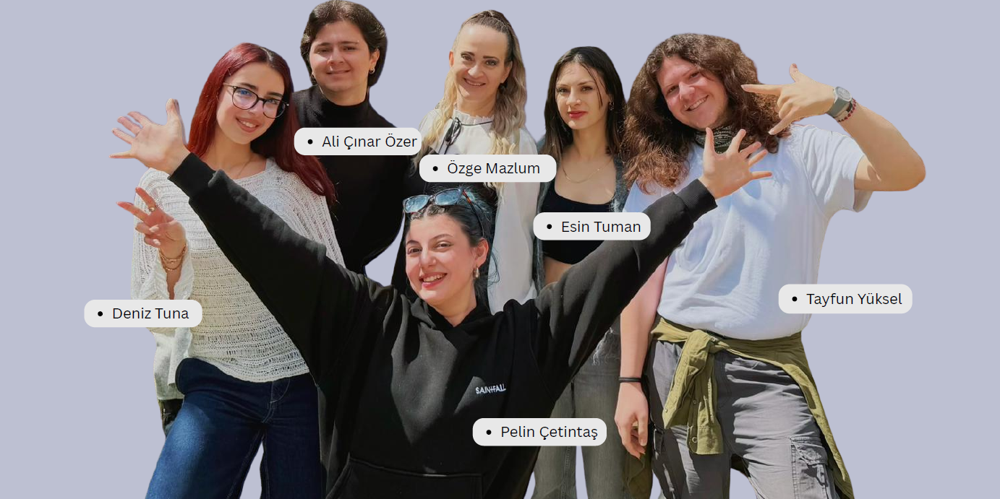

Parantez; güvenli okul kültürü, öğrenci dayanışması ve zorbalığa karşı farkındalık geliştirmeyi amaçlayan bir oluşumdur.

Sessizliğin normalleşmemesini, zorbalığın görünmezleşmemesini ve dayanışmanın güçlenmesini savunuyoruz.
Yalnızca bir kampanya değil; iletişim, farkındalık, güvenli yönlendirme ve sosyal etki odağıyla düşünen bir yapı kuruyoruz.
Bazen sadece bir kişinin yanında durması bile bir hikâyenin yönünü tamamen değiştirebilir.
Biz, zorbalığa karşı sadece tepki veren değil; önceden fark eden, güvenli şekilde yönlendiren ve topluluk kültürünü dönüştürmeye çalışan bir anlayışı benimsiyoruz. Parantez’in amacı yalnızca bir şey söylemek değil, gerçekten bir şey değiştirmek.